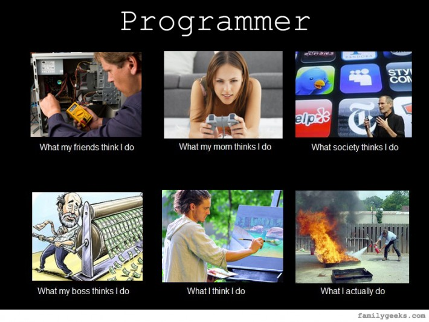

First 5 Years
What you need to know as a new developer.
@lscottbock | Consultant | Object Partners

These slides are up on GitHub scottbock.github.io/NewDevelopersPresentation
Also a printable version | Open Printable PDF
About me
- B.A. Math, Computer Science from NWC 2003
- M.S. in Mathematics from UNO 2006
- 9 years in DOD
- 5 years as consultant
Things I'm not
- A lawyer
- A financial planner
- A life coach
- An accountant
What would you say you do here?
I thought be a programmer would be
- Code by myself all day
- Get well thought out requirements
- Tasks take no more than a few hours each
- Create a function that takes this input and gives that output
- Create new things all the time
What its really like
- Meetings
- Collaboration
- Requirements not well thought out
- Gigantic tasks
- Working on other people's code
You're now part of a team
- Help choosing tech stack
- Break down, estimate tasks
- Peer Review
- It's not YOUR code, it's OUR code
Programming as part of a team
- Version Control
- Peer Review
- Testing
Version Control
- It's not YOUR code, it's OUR code
- Merging can be painful
- Don't force push (unless you know what you're doing)
Good - Git, SVN, Mercurial
Bad - Some other tooling (StarTeam, Accurev)
Ugly - File system
Peer Review
- It's not YOUR code, it's OUR code
- Don't take critique personally
- Be thorough when reviewing others
- Be kind
Good - Some Tooling
Bad - Ad Hoc
Ugly - No Peer Review
Tests
- It's not YOUR code, it's OUR code
- Not just for Java, JS too
- Unit and Integration Tests
Why Integration Tests
Still Not Getting It
One more for the road
Good - Spock, Mockito, Karma, Geb
Bad - Unit test only, Only on server side code
Ugly - No tests
TDD
Test Driven Development
Write your test first (it will fail), then fix it.
Favorite current technologies
Groovy, Java + Lombok
Spring Boot, Grails (may be on the way out)
React, Angular
IntelliJ, Bootstrap
Good News
I'm in a room full of future Millionaires
Future Millionaires
There are more jobs than experienced developers, right now.
In 2-5 years you will be those experienced developers that are so hard to find.
You have the earning potential, but...
Future Millionaires
Its not going to happen automatically. You have to do 2 things:
- Spend less than you make
- Start saving early
Spend less than you make
- Make a Budget
- Pay off your debts
- Don’t get a new car
- Don’t rush to buy a house (20% down, 15yr mortgage)
- Don’t eat out for lunch all the time
- Normal === Broke
Start saving early
Save $50/week for 40 years earning 10% = $1,265,815.00
Save $50/week for 30 years earning 10% = $470,453.00
Retirement
- 401K - Pre-tax contributions. Taxed distributions. May have employer matching. Limited by your employer's choices
- Roth IRA - Post-tax contributions. Non-taxed distributions. Choose whatever funds you want.
- Roth 401K - Employer sponsored Roth
- Traditional IRA (non-401K) - Like a 401K, but without employer sponsorship
Maximize your earnings
- Make connections
- Pay attention to other technologies (user groups)
- Look to switch jobs every 2-3 years (sad but true)
- Don't advertise to your current employer that you're looking
- Go ahead and apply/interview, you don't have to accept every job you're offered
What to do if your job stinks (they all do in some way)
Make connections and get a new one.
- User groups
- Conferences
- Open source
- Side Hustle - find someone you know. Help them solve a problem (simple website for a small business) word will spread
Reading List
The Total Money Makeover - Dave Ramsey
The Millionaire Next Door - Thomas J. Stanley
Health Insurance
Depending on the company you might have many choices, you might have no choices. Probably, part of the premium will be paid for by employer and part by yourself
Premium, Deductible, Health Savings Account (HSA), Flexible Savings Account (FSA)
Premium
The cost (usually paid each paycheck) to maintain your insurance.
Deductible
The portion of a claim that you are responsible: may be per visit, per year, depends on what was provided and by whom
Health Savings Account (HSA)
Pre-tax contribution to an account. Don't have to spend it each year. Paired with a High Deductible Policy.
Flexible Savings Account (FSA)
Pre-tax contribution to an account. Must use it all EACH YEAR.
3 Reasons to go to Grad School
- You love the academic part of programming
- You want to teach it
- You're company will pay for it
Grad School
If you're going to go, start right away.
If your company reimburses you, be aware you might have to pay it back if you leave the company too soon.
Depending on the company have a masters degree is probably worth about 2 years of experience.
The Next 5 Years
Career Path != Manager or Architect
Get your house paid off
Mentor